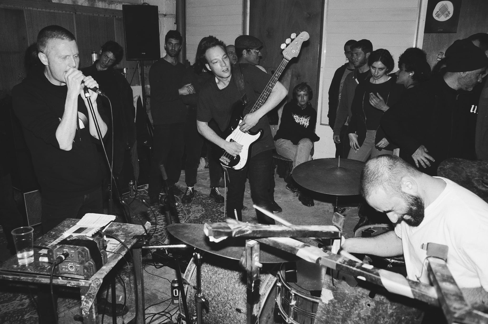

רעש רקורדס (Raash Records)
אדם/ קבוצה
רעש רקורדס הוא לייבל שמתמחה במוזיקה אקספרימנטלית, הכוללת בין השאר נויז רוק, אלקטרונית ונויז. הכובע השני שחובשים אנשי הלייבל הוא בארגון אירועי מוזיקה והופעות, בעיקר בסטודיו שלהם שממוקם בתלפיות.
הלייבל התפתח מרעש Hour, סדרת שידורי תוכניות ואירועים במקום שנקרא הרדיו, שהיה פאב ותחנת רדיו, ושמאחוריה עמד גילי לוי (גלי דה קיד). בנוסף לפודקאסטים שעשו והאירועים והמסיבות שארגנו נוצר בסביבות 2017 רצון להוציא הקלטות של מוזיקה של הרכבים שהיו מעורבים ברעש Hour. באותה תקופה החבורה כללה גם את עופר טיסר, גבריאל (גברי) גודמן, איתי אנקר, סיגל לחם (סיגי אום), איליה גורוביץ ואחרים. התקליט הראשון שהוציאו היה ויניל 7 אינץ' של איליה גורוביץ, ואחריו אלבום של הלהקה הינום. לאחר מכן, בתקופת 2018-19, הקולקטיב די התפרק. גילי אמר שהוא לא מעוניין להמשיך לעסוק בו, ואמר לגברי והאחרים שהם יכולים לקחת את האחריות על הלייבל. גברי, איתי ועידו מנדיל לקחו משם את השם והתחילו להוציא מוזיקה תחת השם רעש רקורדס, כמעין המשך שהוא גם משהו אחר מרעש האוור. שלושתם עבדו אז בסירה, המקום בו תקלטו אנשים רבים כמו גילי ושם הם נפגשו לראשונה איתו ועם שאר המעורבים ברעש האוור.
נקודת המפנה מבחינתם היתה הוצאת האוסף הראשון שלהם ב-2018 על גבי קסטה, בתור השקת האלבום הראשון של הלייבל החדש. מאז הוחלט שכל דבר שיוציאו יצא בפורמט פיזי. הסגנונות המוזיקליים אולי השתנו מאז אבל המהות נשארה, המניע נשאר להוציא מוזיקה חדשנית שמעניינת אותם. מאז הלייבל צמח והוציא מוזיקה רבה בדיגיטל ועל גבי קסטות, של אמנים שונים מהארץ ומחו"ל. ההופעות של הלייבל התקיימו בהתחלה במקומות שונים בירושלים, בעיקר המזקקה, המפעל – הבתים הראשונים שלהם, וכמו כן בפונדק, הקסטה, פרגמון, הזירה. מאז 2020 יש להם סטודיו משלהם בתלפיות, שם הם עורכים את רוב האירועים מאז.
הפעילות בסטודיו עצמאית לגמרי ללא תכתיבים בנושאים כמו תכנים ושעות פעילות. הפעילות אינה ממומנת או מקבלת תקציב מגופים כמו מפעל הפיס וכדומה, ואנשי הלייבל גם אינם מעוניינים בסיוע ממסדי. כך הסטודיו מאפשר להם סביבה שמתאימה לחלוטין לעשיה בה הם מעוניינים. זאת בניגוד למקומות אחרים כמו המזקקה והמפעל שלתחושתם השתנו בשנים האחרונות, עוברים תהליך מסוים של התמסדות תוך איבוד חלק מהעוקץ בקו המוזיקלי והאמנותי, ולכן כבר לא מתאימים לשמש כבית לעשיה של רעש רקורדס.

הופעה של להקת אנדרטה בסטודיו בתלפיות
פוסטר לערב של רעש רקורדס בפרגמון - עיצוב של גורי מסטודיו שטראוס